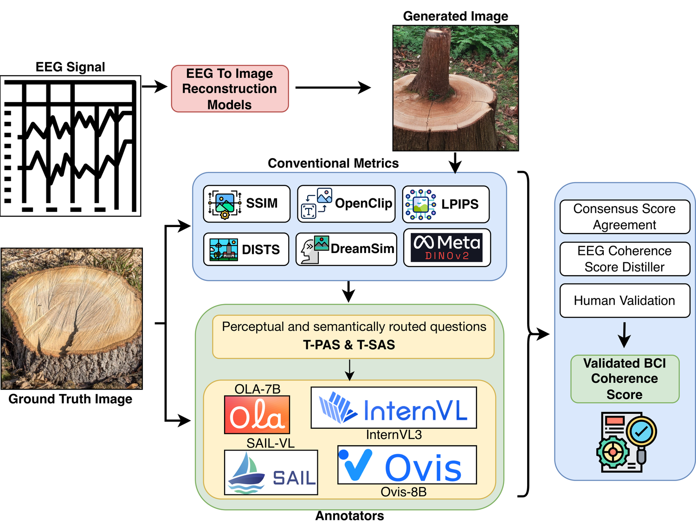

EEG → Image · Evaluation
Lost in Visual Translation
A VLM-Assisted Perceptual–Semantic Coherence Framework for EEG-to-Image Reconstruction.
Brain-derived reconstructions are noisy and low-detail by nature. Pixel and embedding metrics can't tell a blurry-but-correct reconstruction from a sharp-but-wrong one — this framework is built to.
The Problem
Two ways evaluation breaks
A reconstruction can fail at the level of pixels, texture, or fine detail while the object or scene it depicts is still perfectly inferable — or it can look clean and still be wrong. Metrics inherited from generic image quality and generation benchmarks conflate the two.

Metric penalizes visual degradation despite recoverable semantic content.
Metric rewards visual plausibility despite wrong semantic content.
Standard metrics barely track meaning
Caption-level semantic probe: BLIP captions both images, SBERT scores their cosine similarity, and each metric is checked against that ordering (Table 1, all 6,885 pairs).
| Metric | ρcap | rcap | Cap-HR ↓ | Cap-BSR ↓ |
|---|---|---|---|---|
| MSE | -0.012 | -0.003 | 0.257 | 0.257 |
| SSIM | -0.044 | -0.059 | 0.277 | 0.247 |
| LPIPS | 0.109 | 0.097 | 0.211 | 0.188 |
| DISTS | 0.229 | 0.238 | 0.167 | 0.159 |
| DreamSim | 0.483 | 0.526 | 0.071 | 0.092 |
| OpenCLIP | 0.501 | 0.553 | 0.060 | 0.082 |
| DINOv2 | 0.389 | 0.503 | 0.103 | 0.116 |
| ImageReward | 0.309 | 0.461 | 0.113 | 0.152 |
Pixel-level scores (MSE, SSIM) are near-zero correlated with caption-level semantics. A controlled six-corruption probe (blur, noise, downsampling, JPEG, color attenuation, spatial shift; Table 2) shows the instability is corruption-dependent — e.g. edge-cosine similarity tracks blur well (ρ = 0.947) but collapses under color attenuation (ρ = −0.607).
Abstract
Evaluating EEG-to-image reconstruction is notoriously difficult because brain-derived images are often distorted and low-detail. Standard metrics like SSIM, LPIPS, and CLIP frequently fail, either penalizing semantically recoverable reconstructions or rewarding visually plausible but incorrect outputs. We bridge this gap with a BCI-aware framework focused on perceptual-semantic coherence. Analyzing 6,885 image pairs across ATM, ENIGMA, BrainVis, and DreamDiffusion, we demonstrate that pixel-level metrics (MSE, SSIM) correlate near-zero with semantic consistency, while representation-based scores conflate distinct visual attributes. We introduce a routed annotation protocol using four open-weight VLMs to estimate Tolerant Perceptual (T-PAS) and Semantic (T-SAS) Alignment Scores, then distill this supervision into the BCI-Coherence Score (BCS) — a compact evaluator that predicts consensus without repeated VLM inference. On held-out data, our strongest BCS ensemble achieves a PAS MAE of 0.079 (r = 0.700) and SAS MAE of 0.082 (r = 0.850); at the question level, it reaches Q-MAE of 0.122, Q-r of 0.783, and Q-ρ of 0.788. A validation study with 15 human annotators confirms that coherence judgments are significantly more reliable than isolated perceptual or semantic ones (κ = 0.882 ± 0.174, α = 0.882). These results advocate for shifting evaluation from mere visual fidelity toward perceptual–semantic recoverability.
The Framework
A BCI-aware coherence pipeline
The framework separates what changed visually from what changed semantically, scores both with routed VLM questions, and distills the result into one reusable model.
- 1
Perceptual–semantic metric analysis. 6,885 ground-truth/reconstruction pairs across ATM, ENIGMA, BrainVis, and DreamDiffusion, isolating two failure regimes: harshness and semantic blindness.
- 2
BCI-aware VLM annotation protocol. Twelve routed perceptual/semantic questions yielding T-PAS and T-SAS, checked via multi-VLM agreement and rationale similarity.
- 3
BCI-Coherence Score (BCS). A compact, frozen-encoder evaluator distilled from four-VLM consensus that predicts perceptual and semantic alignment without repeated VLM inference at test time.

Four VLM annotators, four operating points
InternVL3, SAIL-VL, OLA-7B, and Ovis2-8B were chosen for being open-weight, reproducible, and representative of strong contemporary performance. They disagree enough in calibration to justify a consensus signal rather than treating any one as ground truth (Table 4):
| VLM | Mean T-PAS | Mean T-SAS |
|---|---|---|
| InternVL3 | 0.341 | 0.252 |
| SAIL-VL | 0.213 | 0.157 |
| OLA-7B | 0.433 | 0.335 |
| Ovis2-8B | 0.337 | 0.345 |
SAIL-VL is the most conservative annotator; OLA-7B the most permissive, especially on perceptual questions.
The 12 routed questions
Each pair is scored no / somewhat / yes (→ 0 / 0.5 / 1). Questions that don't fit a given image pair are omitted rather than forced (Table 3).
Perceptual
- P1Spatial layout — does the generated image preserve the overall layout and position of the main regions?
- P2Shape — is the main object's shape or silhouette similar?
- P3Texture/material — are surface texture or material patterns similar?
- P4Color — are the main colors and chromatic appearance similar?
- P5Artifacts — is the image free from severe artifacts or noise that obscure the content?
- P6Holistic visual recoverability — can the original visual content be broadly recovered?
Semantic
- S1Basic category — is the main object or scene category correct?
- S2Specific identity — is the specific subtype or identity correct, not just the broad category?
- S3Function/purpose — does the generated content preserve the object's role or purpose?
- S4Quantity — is the number of main objects or entities preserved?
- S5Scene/context — is the surrounding scene or environment similar?
- S6Holistic semantic recoverability — can the original meaning be understood?
Results
BCS recovers most of the four-VLM consensus
Trained on a concept-level split of the 6,885 pairs (4,797 train / 1,089 val / 999 held-out test) using frozen SigLIP + CLIP + DINOv3 encoders feeding a small residual MLP head — only the MLP is trained.
| Model | Q-MAE | Q-r | Q-ρ | PAS MAE | PAS-r | SAS MAE | SAS-r |
|---|---|---|---|---|---|---|---|
| SigLIP baseline | 0.160 | 0.760 | 0.724 | 0.098 | 0.639 | 0.103 | 0.782 |
| 3-VLM ordinal ensemble | 0.118 | 0.742 | 0.739 | 0.092 | 0.632 | 0.098 | 0.786 |
| 4-VLM ordinal ensemble | 0.122 | 0.783 | 0.788 | 0.086 | 0.645 | 0.091 | 0.828 |
| 4-VLM continuous ensemble ★ | 0.137 | 0.815 | 0.798 | 0.079 | 0.700 | 0.082 | 0.850 |
★ Used as the primary BCI-Coherence Score. It doesn't have the lowest raw question-level error — the 3-VLM ordinal ensemble does (Q-MAE 0.118) — but it best preserves the fractional consensus signal at the aggregate perceptual/semantic level, which is BCS's intended operating point.
Human Validation
Coherence judgments hold up. Isolated ones don't.
Across all 6,885 pairs, four VLMs produced 82,410 scored question-instances. Unanimous 4-way agreement: 44.7%; overall Fleiss' κ = 0.363 — moderate, as expected when judging heavily degraded reconstructions. The strongest pair is InternVL3 ↔ Ovis2-8B (weighted κ = 0.594, rationale similarity 0.700).

Stable across VLMs
Subjective across VLMs
15 human annotators confirm the pattern
Table 7 — Cohen's κ (mean ± s.d. across annotator pairs) and Krippendorff's α.
Perceptual α = 0.094, semantic α = 0.574, coherence α = 0.882. Measured on a targeted 18-image subset (9 stimuli × 2 reconstructions) stratified toward high-perceptual, high-semantic, and coherence-extreme cases — built to stress-test disagreement, not a random sample of reconstruction quality.
Cite This Work
BibTeX
Submission is anonymous and under review — venue, year, and citation key are placeholders. Update on acceptance.
@article{anonymous2026lostvisualtranslation,
title = {Lost in Visual Translation: A VLM-Assisted Perceptual-Semantic
Coherence Framework for EEG-to-Image Reconstruction},
author = {Anonymous Authors},
journal = {Under review},
year = {2026},
note = {Preprint. Replace with camera-ready venue, volume, and page
numbers upon acceptance.}
}